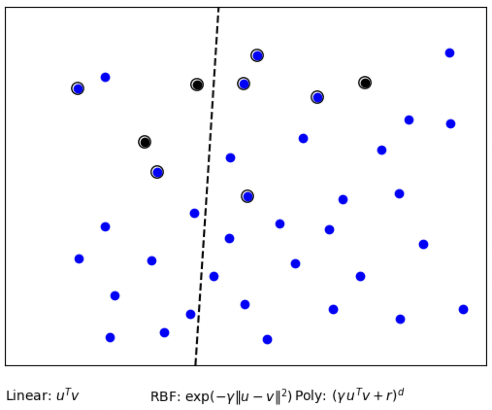

L’objectif de ce TP est de mettre en pratique la technique de classification Support Vector Machine (SVM) sur des données réelles et simulées au moyen du package scikit-learn et d’apprendre à contrôler les paramètres garantissant leur flexibilité.
1.2. Notations et formules
Nous rappelons les définitions, notations et formules suivantes :
\(\mathcal{Y}\) : ensemble des étiquettes (labels), usuellement \(\mathcal{Y} = \{-1, 1\}\) pour la classification binaire.
\(x = (x_1, \ldots, x_p) \in \mathcal{X} \subset \mathbb{R}^p\) : une observation (ou exemple) décrite par \(p\) variables.
\(\hat{f} : \mathcal{X} \to \{-1, 1\}\) : fonction de classification apprise à partir de \(\mathcal{D}_n\).
Overfitting (surapprentissage) : phénomène où le modèle mémorise les données d’entraînement au lieu d’apprendre des patterns généralisables (problème de généralisation) et ne peut pas reconnaître d’autres données. Cela se traduit par une excellente performance sur les données d’entraînement mais une performance dégradée sur les données de test.
1.3. Méthode Support Vector Machine
Les Vector Support Machine (SVM) sont un ensemble de méthodes d’apprentissage supervisé, utilisées pour la classification, la régression et la détection de valeurs abberantes.
Les SVM reposent sur deux idées clés : la notion de marge maximale (distance entre la frontière de séparation et les échantillons les plus proches) et celle de fonction de noyau (opérateur linéaire défini à l’aide d’une intégrale paramétrique sur certains espaces fonctionnels).
Leurs avantages sont leur efficacité dans les espaces en grande dimension (lorsqu’il y a plus de variables que d’individus). Plusieurs fonctions de noyaux peuvent être utilisées.
Cependant, les SVM ne fournissent pas directement d’estimation de probabilité, il faut les calculer à l’aide de la validation croisée.
2. Mise en oeuvre - Iris
Nous commençons tout d’abord par importer les packages qui nous seront nécessaires pour la suite de ce TP.
Code
# Importation des bibliothèquesimport numpy as npimport matplotlib.pyplot as pltfrom sklearn.svm import SVCfrom scripts_Python.svm_source import*from sklearn import svmfrom sklearn import datasetsfrom sklearn.utils import shufflefrom sklearn.preprocessing import StandardScalerfrom sklearn.model_selection import train_test_split, GridSearchCVfrom sklearn.datasets import fetch_lfw_peoplefrom sklearn.decomposition import PCAfrom time import time# Initialisation du scaler pour normaliser les donnéesscaler = StandardScaler()# Ignorer les avertissements pour une sortie plus propreimport warningswarnings.filterwarnings("ignore")# Style de graphiquesplt.style.use('ggplot')
2.1. Question 1.
Nous cherchons ici à développer un code qui va classifier la classe \(1\) contre la classe \(2\) du dataset iris en utilisant les deux premières variables et un noyau linéaire.
Pour cela, nous commençons par importer les données issues du jeu de données précédemment cité. Puis nous ne conservons que les deux premières variables.
Code
# Chargement du dataset Irisiris = datasets.load_iris()X = iris.data# Normalisation des données (moyenne=0, écart-type=1)X = scaler.fit_transform(X)y = iris.target# Sélection des données (que classes 1 et 2, avec les 2 premières variables)X = X[y !=0, :2] # garde seulement les colonnes 0 et 1, exclut la classe 0y = y[y !=0] # garde seulement les classes 1 et 2
Ensuite, nous devons laisser un quart des données de côté pour évaluer la performance en généralisation du modèle. Dans ces données, nous allons les séparer en un groupe d’entraînement (\(75\%\)) et un groupe de test (\(25\%\)). Pour ce faire, nous avons décidé d’utiliser la fonction test_train_split qui permet de mélanger automatiquement les données, ce qui est important pour éviter les biais (si les données iris sont ordonnées par classe par exemple). Puis nous avons fixé la graine à \(42\) afin d’assurer la reproductibilité.
Maintenant que nos données sont correctement mélangées et séparées aléatoirement, nous allons pouvoir évaluer la performance en généralisation du modèle à partir d’un . Ce noyau permet de chercher une frontière de décision linéaire (droite en \(2\)D).
Le l’hyperparamètre \(C\) que nous devons choisir (le meilleur possible) est la marge, elle doit faire un compromis entre :
\(C\) petit : marge large mais tolère plus d’erreurs.
\(C\) grand : marge étroitre mais moins d’erreurs d’entraînement (risque d’overfitting).
Code
# Configuration de la recherche par grille pour trouver le meilleur Cparameters = {'kernel': ['linear'], # noyau linéaire'C': list(np.logspace(-3, 3, 200))} # 200 valeurs (de 0,001 à 1000)# Création du modèle SVM et recherche du meilleur hyperparamètresvr = svm.SVC()clf_linear = GridSearchCV(svr, parameters) # teste toutes les combinaisons de paramètresclf_linear.fit(X_train, y_train) # validation croisée# Affichage des scoresprint('Generalization score for linear kernel: %s, %s'% (clf_linear.score(X_train, y_train), # score sur train clf_linear.score(X_test, y_test))) # score sur test
Generalization score for linear kernel: 0.7466666666666667, 0.68
Nous savons qu’un bon modèle a un score de test proche de celui du train (ce qui veut dire qu’il n’y a pas d’overfitting).
Nous pouvons voir que le score pour le noyau linéaire des données d’entraînement est de \(0,75\) (\(75\%\)) alors que celui pour les données de test est de \(0,68\) (\(68\%\)).
La performance sur le train n’est pas excellente, en effet elle n’est que de \(75\%\) ce qui indique que le modèle a un peu de mal à séparer les deux classes.
Cependant, le fait qu’il n’y ait qu’une diminution de \(7\%\) entre les données d’entraînement et celles de test est plutôt encourageant. En effet, il est normal qu’il y ait une petite baisse sur des données qui n’ont jamais été vues.
Donc, comme les scores ne sont pas très élevés mais restent assez proches les uns des autres, nous pouvons en déduire que le modèle à noyau linéaire généralise moyennement. Le problème pourrait venir du fait que les classes ne se chevauchent probablement pas de manière linéaire et, comme nous utilisons un noyau linéaire, nous traçons une droite pour faire la séparation. De plus, peut être que les deux premières variables ne suffisent pas à bien discriminer les deux espèces.
2.2. Question 2. Noyau polynomial
Afin de comparer nos performances de généralisation du modèle entre plusieurs noyaux, nous allons faire un SVM basé sur un noyau polynomial.
Code
# Configuration des hyperparamètres pour le noyau polynomialCs =list(np.logspace(-3, 3, 5)) # teste 5 valeurs de C (de 0.001 à 1000)gammas =10.** np.arange(1, 2)degrees = np.r_[1, 2, 3] # polynômes de degrés 1, 2, 3# Configuration de la grille de rechercheparameters = {'kernel': ['poly'], # noyau polynomial'C': Cs, # 5 valeurs de C'gamma': gammas, # 1 valeur (10.0)'degree': degrees} # 3 valeurs# Entraînement et sélection des meilleurs hyperparamètressvr_poly = svm.SVC() # vecteur videclf_poly = GridSearchCV(svr_poly, parameters) # teste les combinaisons (validation croisée)clf_poly.fit(X_train, y_train) # entraine les modèles et sélectionne le meilleur# Affichage des meilleurs paramètres trouvésprint(clf_poly.best_params_)print('Generalization score for polynomial kernel: %s, %s'% (clf_poly.score(X_train, y_train), clf_poly.score(X_test, y_test)))
Nous pouvons voir que nous obtenons exactement les mêmes scores pour le noyau polynomial que ceux que nous avions obtenu pour le noyau linéaire. En effet, nous pouvons voir des scores de \(0,75\) pour le train et de \(0,68\) pour les données de test.
Si nous regardons les hyperparamètres choisis par le modèle, nous pouvons voir que cette similarité n’est pas une coïncidence. En effet, elle s’explique par le choix des hyperparamètres optimaux sélectionnés par GridSearchCV pour le noyau polynomial.
Le paramètre important à regarder ici est le degré. Nous pouvons voir qu’il s’agit d’un noyau polynomial de degré \(1\) qui a été choisi, ce qui équivaut à un noyau linéaire et c’est donc pour cela que nous obtenons les mêmes résultats au niveau des scores.
Ainsi, cette sélection automatique du degré \(1\) par la validation croisée indique que la frontière de décision optimale pour séparer les classes \(1\) et \(2\) d’iris (avec les deux premières variables) est effectivement linéaire. Les polynômes de degrés supérieurs testés n’ont pas apporté d’amélioration, probablement car ils introduisent plus de complexité qui mène au surapprentissage sur cet ensemble de données.
Cela suggère que, dans l’espace défini par les deux premières variables, les données de ces deux classes d’iris présentent une structure essentiellement linéaire, ce qui justifie l’efficacité du noyau linéaire pour ce problème de classification.
Afin de vérifier ces résultats, nous allons les tracer en utilisant frontiere.
Code
# Visualisation des frontières de décision (svm_source.py)def f_linear(xx):return clf_linear.predict(xx.reshape(1, -1))def f_poly(xx):return clf_poly.predict(xx.reshape(1, -1))# Création des graphiques comparatifsplt.ion()plt.figure(figsize=(15, 5))# Graphique 1 : données originalesplt.subplot(131)plot_2d(X, y)plt.title("iris dataset")# Graphique 2 : frontière avec noyau linéaireplt.subplot(132)frontiere(f_linear, X, y)plt.title("linear kernel")# Graphique 3 : frontière avec noyau polynomialplt.subplot(133)frontiere(f_poly, X, y)plt.title("polynomial kernel")plt.tight_layout()plt.draw()
Ainsi, les graphiques confirment visuellement notre analyse précédente : les frontières de décision pour les noyaux linéaire et polynomial sont identiques.
Nous voyons que la frontière de décision est une droite qui sépare l’espace en deux régions distinctes (bleue et orange). La distribution des données montre qu’il n’y a pas de courbure complexe visible, ce qui justifie que les noyaux polynomiaux de degré supérieurs n’ont pas été sélectionnés.
De plus, nous observons un chevauchement partiel entre les deux classes (les points bleus et oranges sont mélangés dans certaines zones) ce qui explique pourquoi les scores de classification ne sont pas parfaits (\(75\%\) et \(68\%\)).
3. Mise en oeuvre - SVM GUI
3.1. Question 3.
Dans cette question, nous nous basons sur une application qui permet, en temps réel, d’évaluer l’impact du choix du noyau et du paramètre de régularisation \(C\).
Pour commencer, nous lançons le script svm_script.py. Ensuite, nous créons un dataset très déséquilibré avec \(35\) points bleus (\(92\%\)) et \(3\) points noirs (\(8\%\)) en essayant de marquer la différence entre la localisation des points bleus et noirs (tout en gardant des débordements).
(a) C = 10
(b) C = 1
(c) C = 0,1

(d) C = 0,01
Figure 1: Influence du paramètre C sur un dataset déséquilibré avec noyau linéaire
Pour \(C = 10\) : l’hyperplan est légèrement en diagonale et minimise les erreurs sur toutes les classes (les points noirs sont tous classés ensemble).
Pour \(C = 1\) : l’hyperplan est en diagonale et fait un vrai compromis entre les deux classes. Comme celui avec \(C\) plus élevé, il arrive bien à séparer à la fois les bleus et les noirs.
Pour \(C = 0,1\) : l’hyperplan est quasiment à la verticale, il n’y a que deux points noirs qui sont ensemble et le troisième est mal classé.
Pour \(C = 0,01\) : l’hyperplan est également à la verticale, il a l’air d’ignorer les points noirs et se contente de séparer les points bleus.
Nous pouvons voir que les \(C\) élevés (\(10\) et \(1\)) semblent proches, de même que les \(C\) faibles (\(0,1\) et \(0,01\)). Nous voyons que les premiers prennent bien en compte les points minoritaires et les classent de la bonne manière. A contrario, les deux derniers semblent très tolérants aux erreurs : comme les bleus sont majoritaires, ils optimisent uniquement pour eux et négligent les noirs.
Ainsi, nous pouvons en conclure que, lorsque nous diminuons \(C\) sur un dataset déséquilibré avec un noyau linéaire, l’hyperplan se déplace pour favoriser la bonne classification de la classe majoritaire et pour maximiser la marge, au détriment de la classe minoritaire. Avec \(C\) très faible, le modèle ignore presque complétement les points noirs.
Cela s’explique car le paramètre \(C\) contrôle le coût des erreurs de classification. Avec \(C\) faible, le modèle préfère un hyperplan simple (avec une grande marge) quite à faire des erreurs. Sur des données déséquilibrées, ces erreurs affectent principalement la classe minoritaire car elle a moins d’influence sur l’optimisation.
Ce phénomène illustre donc un problème critique en apprentissage automatique sur données déséquilibrées. Lorsque \(C\) diminue, le modèle privilégie une marge large (simplicité) au détriment de la précision sur la classe minoritaire.
4. Mise en oeuvre - Classification de visages
Dans cette partie, nous utilisons une base de données extraite de “Labeled Faces in the Wild” afin d’exposer un problème de classification de visages.
Nous commençons donc par télécharger la base de données qui nous intéresse.
Code
# Téléchargement de la base de données "Labeled Faces in the Wild"lfw_people = fetch_lfw_people(min_faces_per_person=70, resize=0.4, color=True, funneled=False, slice_=None, download_if_missing=True)# Extraction des donnéesimages = lfw_people.imagesn_samples, h, w, n_colors = images.shapetarget_names = lfw_people.target_names.tolist()
Puis, nous choisissons une paire de personnes à classer : Donald Rumsfeld et Colin Powell.
Code
# Sélection de deux personnes à classifiernames = ['Donald Rumsfeld', 'Colin Powell']# Filtrage des images pour ne garder que ces deux personnesidx0 = (lfw_people.target == target_names.index(names[0]))idx1 = (lfw_people.target == target_names.index(names[1]))images = np.r_[images[idx0], images[idx1]]n_samples = images.shape[0]# Création des étiquettes (0 pour Rumsfeld, 1 pour Powell)y = np.r_[np.zeros(np.sum(idx0)), np.ones(np.sum(idx1))].astype(int)# Affichage d'un échantillon de 12 visagesplot_gallery(images, np.arange(12))plt.show()
Figure 2: Exemple de 12 visages de notre base de données
Nous observons quelle personne entre les deux étudiées est la plus représentée dans notre jeu de données et à quelle proportion.
Code
# Code supplémentaire de vérification/interprétation# Vérifier la distribution des classesunique, counts = np.unique(y, return_counts=True)class_distrib =dict(zip(unique, counts))# Affichage des résultatsprint("Distribution des classes :")print(f"{names[0]} : {class_distrib[0]} images ({class_distrib[0]/len(y)*100:.1f}%)")print(f"{names[1]} : {class_distrib[1]} images ({class_distrib[1]/len(y)*100:.1f}%)")
Distribution des classes :
Donald Rumsfeld : 121 images (33.9%)
Colin Powell : 236 images (66.1%)
Nous voyons qu’il y a \(357\) images au total et que c’est Colin Powell qui est le plus représenté avec \(66,1\%\) des images totales.
Nous continuons en divisant les données en deux sous-ensembles : un ensemble d’entraînement (train) et un ensemble de test (test).
Code
# Extraction des caractéristiques (intensité lumineuse moyenne en niveaux de gris)X = (np.mean(images, axis=3)).reshape(n_samples, -1)# Normalisation des caractéristiques (centrage et réduction)X -= np.mean(X, axis=0)X /= np.std(X, axis=0)# Séparation train/test (50/50)np.random.seed(42) # ajout d'une graine pour reproductibilitéindices = np.random.permutation(X.shape[0])train_idx, test_idx = indices[:X.shape[0] //2], indices[X.shape[0] //2:]X_train, X_test = X[train_idx, :], X[test_idx, :]y_train, y_test = y[train_idx], y[test_idx]images_train, images_test = images[ train_idx, :, :, :], images[test_idx, :, :, :]
4.1. Question 4.
Nous cherchons maintenant à montrer l’influence du paramètre de régularisation \(C\) en affichant l’erreur de prédiction.
Code
print("--- Linear kernel ---")print("Fitting the classifier to the training set")t0 = time()# Définition de la grille de valeurs de C à tester (de 10^-5 à 10^6)Cs =10.** np.arange(-5, 6)scores = []# Boucle pour tester chaque valeur de Cfor C in Cs:# Création d'un SVM avec noyau linéaire et paramètre C donné clf_temp = svm.SVC(kernel='linear', C=C)# Entraînement du modèle sur les données d'entraînement clf_temp.fit(X_train, y_train)# Évaluation sur les données de test et stockage du score scores.append(clf_temp.score(X_test, y_test))# Identification du meilleur C (celui qui maximise le score)ind = np.argmax(scores)print("Best C: {}".format(Cs[ind]))# Visualisation de l'évolution du score en fonction de Cplt.figure()plt.plot(Cs, scores)plt.xlabel("Parametres de regularisation C")plt.ylabel("Scores d'apprentissage")plt.xscale("log")plt.tight_layout()plt.show()print("Best score: {}".format(np.max(scores)))print("Predicting the people names on the testing set")t0 = time()
--- Linear kernel ---
Fitting the classifier to the training set
Best C: 0.001
Figure 3: Evolution du score d’apprentissage en fontion du paramètre de régularisation
Best score: 0.9273743016759777
Predicting the people names on the testing set
On peut voir dans la Figure 3 qu’il y a \(92,7\%\) de précision sur l’ensemble de test, ce qui est une très bonne performance pour la classification de nos visages. Cela signifie que le modèle prédit correctement l’identité de la personne dans \(93\%\) des cas.
De plus, nous voyons que la courbe montre trois zones distinctes :
Pour \(C < 10^{-4}\) : les scores sont faibles. La régularisation est excessive, le modèle est trop simple et sous-apprend. De plus, la marge doit être trop large ce qui permet trop d’erreurs.
Pour \(10^{-4} ≤ C ≤ 10^{-3}\) : les scores augmentent jusqu’à un pic optimal (pour \(C = 0,001\)). Nous avons le meilleur compromis biais-variance car le modèle capture la structure des données sans sous ou sur apprendre.
Pour \(C > 10^{-3}\) : les scores se stabilisent en un plateau. La performance n’augmente plus car le modèle est déjà suffisamment complexe. Donc, augmenter \(C\) ne sert plus à rien et nous risquons de faire apparaître du sur-apprentissage.
Ainsi, le SVM avec \(C = 0.001\) et le noyau linéaire offre une très bonne performance (\(92.7\%\)) pour cette tâche de reconnaissance faciale : il est suffisamment élevé pour permettre au modèle de capturer les différences entre les visages mais reste assez bas pour éviter de sur-ajuster les particularités de l’ensemble d’entraînement (expressions faciales, accessoires, éclairage, etc.).
De plus, nous pouvons en déduire qu’il y a probablement du bruit ou des variations dans les images (éclairage, expression, etc.) ce qui permet qu’une valeur de \(C\) pas trop élevée aide à ignorer ce bruit. En effet, le fait que la performance n’augmente pas pour des C plus grands suggère que le noyau linéaire capture bien la structure des données dans l’espace des caractéristiques.
Ainsi, à partir de ce classificateur optimal, nous cherchons maintenant à prédire les étiquettes pour les images \(X_{test}\).
Code
# Entraînement du modèle avec le meilleur C trouvéclf = svm.SVC(kernel='linear', C=Cs[ind])clf.fit(X_train, y_train)# Prédiction sur l'ensemble de testy_pred = clf.predict(X_test)print("done in %0.3fs"% (time() - t0))# Calcul du niveau de chance (si on prédit toujours la classe majoritaire)print("Chance level : %s"%max(np.mean(y), 1.- np.mean(y)))print("Accuracy : %s"% clf.score(X_test, y_test))
done in 0.166s
Chance level : 0.6610644257703081
Accuracy : 0.9273743016759777
Nous pouvons voir que nous avons un niveau de chance de \(66\%\), ce qui correspond à la précision qu’on obtiendrait en prédisant toujours la classe majoritaire (dans notre cas Colin Powell). C’est-à-dire qu’un classificateur naïf qui prédirait toujours Colin Powell aurait \(66\%\) de précision. Cela correspond donc à notre borne inférieur : tout modèle doit faire mieux que ça.
Ensuite, nous obtenons une précision de \(92,7\%\), comme nous l’avions vu précédemment pour un \(C = 0,001\). En le comparant à notre niveau de base à absolument dépasser pour faire mieux qu’une prédiction naïve, nous voyons que la différence est très importante entre les deux. En effet, le modèle a réellement appris à distinguer les deux personnes et ne se contente pas de prédire la classe majoritaire.
Maintenant, après avoir évalué quantitativement nos prédictions, nous allons les évaluer qualitativement à l’aide la librairie matplotlib.
Code
# Création des titres pour chaque prédiction (correct/incorrect)prediction_titles = [title(y_pred[i], y_test[i], names)for i inrange(y_pred.shape[0])]# Affichage d'une galerie de prédictionsplot_gallery(images_test, prediction_titles)plt.show()# Visualisation des poids du classificateur sous forme d'imageplt.figure()plt.imshow(np.reshape(clf.coef_, (h, w)))plt.show()
(a) Prédiction des étiquettes des 12 premiers visages
(b) Heatmap des poids du classificateur SVM linéaire
Figure 4: Évaluation qualitative des prédictions
La galerie d’images permet d’évaluer visuellement les performances du modèle. On peut voir que la majorité des visages sont correctement classés (seulement \(2\) erreurs sur les prédictions de Powell, ce qui correspond ici à environ \(83\%\) de prédiction correcte). On voit également que le modèle a réussi à identifier les personnes même avec des variations comme les expressions faciales, les angles de vue, les conditions d’éclairage ou encore la présence/absence de lunettes.
La deuxième image montre une heatmap qui indique les poids du modèle SVM linéaire sous forme d’image :
Les zones jaunes : elles indiquent les caractéristiques de la première classe (Colin Powell).
Les zones bleus foncées : elles indiquent les caractéristiques de la deuxième classe (Donald Rumself).
Les zones turquoise : elles indiquent que les pixels sont peu disciminants et n’aident pas à identifier la personne (poids proches de \(0\)).
Plus spécifiquement, nous voyons sur notre image qu’il y a des tâches jaunes principalement au centre de la photo, ce qui pourrait correspondre aux zones du nez et des yeux. De plus, nous voyons une tâche bleue foncée en dessous des jaunes, qui semble être la zone de la bouche ou du menton et qui permet d’identifier la seconde personne. Toutes ces zones décrites sont celles qui permettent le mieux d’identifier si nous sommes en présence de Colin Powell ou de Donald Rumself. Ainsi, en se basant sur le turquoise, nous pouvons voir que l’arrière plan n’aide pas à discriminer la personne dans notre modèle, ce qui est cohérent car nous avons vu qu’il changeait sur chaque photographie.
Ainsi, nous pouvons dire que le SVM linéaire a appris à se concentrer sur les régions centrales du visage qui contiennent effectivement le plus d’informations discriminantes. Le fait que les poids les plus élevés soient localisés et non diffus suggère que le modèle semble avoir identifié des patterns cohérents plutôt que du bruit. De plus, il nous semble distinguer un visage dans la heatmap, ce qui appuie cette dernière conclusion.
4.2. Question 5.
Nous allons maintenant ajouter \(300\) variables de nuisance afin de vérifier si la performance chute bien (ce qui serait dû au nombre de variables à nombre de points d’apprentissage fixé qui augmente).
Code
# Fonction pour entraîner et évaluer un SVM avec validation croiséedef run_svm_cv(_X, _y):# Ajout de la graine np.random.seed(42)# Permutation aléatoire des indices pour mélanger les données _indices = np.random.permutation(_X.shape[0])# Séparation en 50% train / 50% test _train_idx, _test_idx = _indices[:_X.shape[0] //2], _indices[_X.shape[0] //2:]# Extraction des sous-ensembles _X_train, _X_test = _X[_train_idx, :], _X[_test_idx, :] _y_train, _y_test = _y[_train_idx], _y[_test_idx]# Configuration de la recherche par grille (5 valeurs de C entre 0.001 et 1000) _parameters = {'kernel': ['linear'], 'C': list(np.logspace(-3, 3, 5))} _svr = svm.SVC() _clf_linear = GridSearchCV(_svr, _parameters)# Entraînement avec sélection automatique du meilleur C _clf_linear.fit(_X_train, _y_train)# Affichage des performancesprint('Generalization score for linear kernel: %s, %s\n'% (_clf_linear.score(_X_train, _y_train), _clf_linear.score(_X_test, _y_test)))print("Score sans variable de nuisance")run_svm_cv(X, y)print("Score avec variable de nuisance")# Nombre de caractéristiques originalesn_features = X.shape[1]# Génération de 300 variables dde nuisance (loi gaussienne)sigma =1noise = sigma * np.random.randn(n_samples, 300, ) # Concaténation des données originales avec le bruitX_noisy = np.concatenate((X, noise), axis=1)# Permutation pour mélanger les lignesnp.random.seed(42) # graineX_noisy = X_noisy[np.random.permutation(X.shape[0])]run_svm_cv(X_noisy, y)
Score sans variable de nuisance
Generalization score for linear kernel: 1.0, 0.9273743016759777
Score avec variable de nuisance
Generalization score for linear kernel: 1.0, 0.6368715083798883
Nous avons donc ajouté \(300\) variables de nuisances générées à partir d’un bruit gaussien de variance \(\sigma = 1\). Les résultats montrent que le modèle mémorise toujours bien les données d’entraînement (\(1.0\) donc \(100\%\)) mais cette valeur peut indiquer un sur-apprentissage. De plus, la précision sur le test chute pour passer à \(63,7\%\) ce qui cause une énorme différence entre le score de nos données de train et celle de test et montre que le modèle ne généralise plus. Enfin, nous voyons que ce modèle est moins performant que le niveau de chance, c’est-à-dire qu’il vaut mieux toujours prédire la classe majoritaire plutôt qu’utiliser ce modèle qui va se tromper plus de fois.
Donc, le SVM linéaire tente d’utiliser toutes les variables (signal et bruit) car il ne peut pas distinguer automatiquement les variables utiles du bruit ce qui implique que les \(300\) variables de bruits noient les centaines de variables utiles. Ainsi, le ratio signal/bruit devient défavorable et conduit notre modèle à une performance inférieure au hasard.
4.3. Question 6.
Afin de remédier au problème de données bruitées que nous avons observé lors de la question précédente, nous allons améliorer la prédiction à l’aide d’une méthode de réduction de dimension. Cette méthode est l’Analyse en Composantes Principales (ACP) qui projette les données dans un espace de dimension réduite.
Cette méthode a plusieurs avantages dans notre cas :
Filtrage du bruit : les variables de nuisance sont du bruit gaussien indépendant. Comme les composantes principales capturent d’abord la structure systématique (ici les visages), le bruit se retrouve dans les composantes de faible variance et est éliminé.
Concentration de l’information : les \(n\) premières composantes capturent un certain pourcentage de la variance totale (nous allons le voir par la suite dans le tableau récapitulatif). Cette variance correspond principalement aux vraies caractéristiques faciales. Ainsi, on passe de plus de \(400\) dimension à \(20\), donc le ratio entre le signal et le bruit est nettement amélioré.
Nous testons différentes valeurs de \(n\) (nombre de composantes) pour pouvoir les comparer entre elles et identifier le nombre optimal de composantes principales. Le choix de \(n\) est très important et nous allons essayer de voir son ordre de grandeur optimal :
Trop peu de composants entraîne une perte de signal utile.
Trop de composantes et nous conservons du bruit.
Nous avons écrit le code suivant pour \(n = 20\) et l’avons ensuite modifié en changeant juste ce paramètre.
Code
""" # Décommenter le code pour le faire tourner (attention, environ 20 minutes de chargement)print("Score apres reduction de dimension")# Nombre de composantes principales à conservern_components = 20 # jouer avec ce parametre# Création et ajustement du modèle ACP sur les données bruitéespca = PCA(n_components=n_components, random_state=42).fit(X_noisy)# Projection des données dans le nouvel espace réduitX_noisy_pca = pca.transform(X_noisy)# Évaluation du modèle sur les données transforméesrun_svm_cv(X_noisy_pca, y) """
' # Décommenter le code pour le faire tourner (attention, environ 20 minutes de chargement)\n\nprint("Score apres reduction de dimension")\n\n# Nombre de composantes principales à conserver\nn_components = 20 # jouer avec ce parametre\n\n# Création et ajustement du modèle ACP sur les données bruitées\npca = PCA(n_components=n_components, random_state=42).fit(X_noisy)\n\n# Projection des données dans le nouvel espace réduit\nX_noisy_pca = pca.transform(X_noisy)\n\n# Évaluation du modèle sur les données transformées\nrun_svm_cv(X_noisy_pca, y) '
Nous avons obtenu les scores suivants :
Table 1: Impact du nombre de composantes de l’ACP sur les scores du modèle de classification
Nombre de composantes
Score Train
Score Test
Écart
2
0,691
0,631
6,0%
5
0,663
0,659
0,4%
10
0,646
0,665
1,9%
15
0,691
0,631
6,0%
20
0,646
0,642
0,4%
25
0,697
0,631
6,6%
30
0,691
0,603
8,8%
50
0,770
0,536
23,4%
100
0,888
0,542
34,6%
200
0,966
0,542
42,1%
Afin d’identifier le nombre optimal de composantes principales et de déterminer le seuil à partir duquel apparaît l’overfitting, nous avons testé une large gamme de valeurs : \(n = 2, 5, 10, 15, 20, 25, 30, 50, 100, 200\). Cette exploration systématique nous permet d’observer l’évolution des performances et de caractériser précisément le comportement du modèle en fonction de la dimensionnalité.
Au niveau du lancement du code, le temps de calcul s’est révélé particulièrement long pour cette expérimentation. L’exécution complète a nécessité environ \(20\) minutes pour chaque les valeurs de \(n\) testées, à l’exception de \(n=100\) et \(n=200\) qui ont été nettement plus rapides (\(5\) secondes). Cette différence s’explique par le fait que pour \(n=100\) et \(n=200\), bien que le nombre de composante soit plus élevé, l’algorithme converge plus rapidement car les données deviennent linéairement séparables dans cet espace de grande dimension (au prix d’un overfitting massif).
A partir de ce tableau, un premier élément particulièrement anormal attire notre attention : le score d’entraînement ne croît pas de manière monotone avec le nombre de composantes. En théorie, lorsque nous augmentons le nombre de composantes, nous donnons au modèle plus d’informations pour ajuster les données d’entraînement. Le score train devrait donc augmenter (ou du moins rester constant) mais jamais diminuer. Or, nous observons des scores de \(69,1\%\) pour \(n = 2\), puis \(64,6\%\) pour \(n = 10\), avant de remonter à \(77,0\%\) pour \(n = 50\). Cette non-monotonie est anormale.
Une explication potentielle pourrait venir d’un problème méthodologique. En effet, la fonction run_svm_cv effectue systématiquement un nouveau split aléatoire des données à chaque appel via np.random.permutation(X.shape[0]). Ainsi, chaque valeur de \(n\) est évaluée sur un ensemble d’entraînement différent, ce qui introduit de la variabilité aléatoire et empêche toute comparaison rigoureuse. Même si le code fourni permet de fixer une graine aléatoire avant l’appel à run_svm_cv, rendant possible la reproductibilité pour chaque \(n\), la comparaison directe entre les différentes valeurs de \(n\) n’est pas vraiment possible car l’aléatoire diffère entre chaque valeur. Cette instabilité méthodologique explique les fluctuations observées sur le train.
Concernant le score de test, nous observons une tendance plus claire : les performances augmentent légèrement jusqu’à \(n = 10\) composantes où nous atteignons \(66,5\%\), puis diminuent progressivement pour stagner autour de \(54\%\) pour \(n≥50\). Le meilleur compromis semble donc se situer autour de \(n=10\) composantes. Cependant, même ce “meilleur” résultat reste décevant avec seulement \(66,5\%\) de précision, à peine au-dessus du niveau de chance (\(66\%\)). Cela suggère que les \(300\) variables de nuisance ont tellement dégradé le signal que même avec une réduction de dimension optimale, nous ne parvenons pas à retrouver les performances initiales (\(~92\%\)).
Enfin, l’écart entre train et test révèle un phénomène critique : pour \(n≤20\) composantes, l’écart reste faible (entre \(0,4\%\) et \(8,8\%\)), indiquant que le modèle généralise correctement. En revanche, au-delà de \(n=20\), l’écart explose littéralement : \(23,4\%\) pour \(n=50\), \(34,6\%\) pour \(n=100\), et \(42,4\%\) pour \(n=200\). Ce phénomène d’overfitting massif s’explique par le fait que les composantes principales de rang élevé ne capturent plus du signal discriminant mais principalement du bruit structuré. Le modèle mémorise ces patterns bruités sur l’ensemble d’entraînement (d’où le score train atteignant \(96,6\%\) pour \(n=200\)), mais ces patterns artificiels ne se généralisent absolument pas au test (qui stagne à \(54\%\)). Ainsi, augmenter le nombre de composantes au-delà de \(20\) ne fait qu’amplifier le sur-apprentissage sans apporter aucun gain en généralisation.
Ce résultat illustre un principe important en machine learning : plus de variables n’est pas toujours mieux (overfitting).
4.4. Question 7.
Il existe un biais dans notre prétraitement des données. En effet, au niveau de la question 4, la standardisation est effectuée sur l’ensemble complet des données avant la séparation en un échantillon d’entraînement et un autre de test. Donc, cela pose problème car les statistiques (moyenne et écart-type) sont calculées en incluant les données de test. Ainsi, le modèle a indirectement accès à des informations de l’échantillon de test pendant l’entraînement, ce qui crée une fuite d’information. Donc, les performances mesurées sont surestimées car le modèle bénéficie d’informations qu’il ne devrait pas avoir en situation réelle. Cela peut également avoir un impact sur l’ACP qui en découle.
La bonne pratique serait de standardiser en utilisant uniquement les données et statistiques associées de l’échantillon d’entraînement.
De plus, comme nous l’avons vu juste au-dessus, il existe un biais au niveau de la permutation, ce qui complique la comparaison des scores et leur interprétation.
5. Conclusion
Au cours de ce TP, nous avons exploré la méthode des Support Vector Machines (SVM) à travers trois applications progressives.
Sur le jeu de données iris, la comparaison des noyaux linéaire et polynomial a révélé que la structure des données est essentiellement linéaire, avec des scores de \(75\%\) en entraînement et \(68\%\) en test indiquant une généralisation correcte mais moyenne. L’exploration avec svm_gui.py a ensuite démontré l’impact critique du paramètre \(C\) sur données déséquilibrées : avec \(C\) faible, l’hyperplan privilégie systématiquement la classe majoritaire, négligeant la classe minoritaire.
Nous avons ensuite fait une application basée sur la reconnaissance faciale. Avec un noyau linéaire optimal (\(C = 0.001\)), nous avons atteint \(92,7\%\) de précision, bien au-dessus du niveau de chance (\(66\%\)). La visualisation des poids a confirmé que le modèle se focalise correctement sur les régions discriminantes (yeux, nez, bouche). Cependant, l’ajout de \(300\) variables de nuisance a provoqué une chute à \(63,7\%\), démontrant la vulnérabilité des SVM face au bruit. L’ACP a partiellement résolu ce problème avec un optimum à \(n=10\) composantes (\(66,5\%\)), mais au-delà de \(n=20\), nous avons observé un overfitting massif confirmant qu’un nombre excessif de variables conduit au sur-apprentissage.
Ce TP a également révélé des limites méthodologiques importantes : la standardisation avant séparation train/test crée une fuite d’information surestimant les performances et les permutations aléatoires successives compliquent la comparaison rigoureuse entre configurations.
En conclusion, la présence de bruit peut dégrader de façon importante les performances, ce qui souligne l’importance de techniques comme l’ACP pour filtrer les variables non informatives. Plus généralement, ce travail rappelle qu’augmenter la complexité d’un modèle n’améliore pas nécessairement ses performances et que la validation méthodologique rigoureuse reste essentielle pour garantir des résultats fiables et généralisables.
6. Sources
Afin de réaliser ce TP, nous nous sommes basés sur plusieurs sources. Tout d’abord, nous avons utilisé la base de code donnée par B.Bensaid, B. Charlier et J. Salmon. De plus, nous avons utilisé le fichier définissant des fonctions svm_source.py écrit par J. Salmon, A. Gramfort et C. Vernade.
Ensuite, afin de réaliser la partie 3, nous nous sommes servis du code disponible via ce lien et écrit par P. Prettenhoer. En ce qui concerne la partie 4, nous nous sommes servis de la base de données disponible via ce lien.